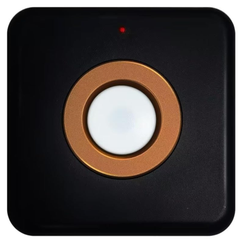
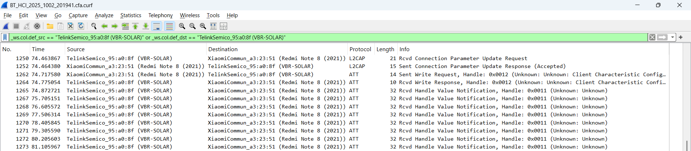
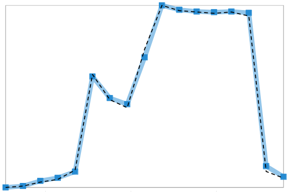

risorse | vbr-solar logger
Attenzione: ho posto la massima cura ed attenzione nel redigere questi appunti; declino tuttavia ogni responsabilità per eventuali imprecisioni, errori od omissioni, così come declino ogni responsabilità per eventuali danni a cose, proprietà o persone derivanti dall'uso di questi contenuti.
Un conoscente ha acquistato il sensore Vabira VBR-Solar che misura l'irraggiamento solare allo scopo di ottimizzare il rendimento di un piccolo impianto fotovoltaico. L'app per smartphone Android distribuita a corredo non permette però di salvare i dati visualizzati in serie temporali per le analisi del caso.
Il sensore VBR-Solar.
La realizzazione del programma di registrazione dei dati raccolti si è rivelata più ardua del previsto ed è avvenuta per passi successivi.
La ricerca di informazioni in rete circa il protocollo di comunicazione del sensore non ha dato frutti. Sapendo che Android consente lo sniffing del traffico Bluetooth ho deciso di procedere con una cattura di basso livello della trasmissione, sperando per il meglio.
Dopo aver predisposto il sensore in una zona a luminosità controllata, sul terminale Android &— uno smartphone Redmi Note 8 — ho effettuato le seguenti operazioni:
A questo punto ho fatto variare artificialmente l'intensità luminosa sul sensore in modo da provocare una minima variazione dei valori mostrati dall'app. Ho quindi:
Il video della sessione di misura è stato utile per ricostruire la sequenza di valori visualizzati dall'app con le relative tempistiche. Per lo scaricamento della cattura del traffico Bluetooth ho proceduto così:
installato e avviato l'Android Debug Brigde;
$ sudo apt install android-tools-adb $ sudo adb start-server
scaricato i log;
$ adb bugreport btsniff
Molte risorse in rete indicano che sia btsnoop_hci.log il file contenente la sniffata, anche se non tutte concordano sul percorso della cartella che lo contiene. La mia esperienza è chiaramente stata diversa.
Ho quindi caricato il file in WireShark. Dopo aver opportunamente filtrato i pacchetti, sono risultate subito evidenti due aspetti:
Parte della negoziazione iniziale tra app e sensore.
L'inizio della sequenza di notifiche emesse dal sensore.
Attraverso un semplice client Python come ad esempio connect_ble_device.py è facile interrogare il sensore per scoprire i servizi che offre:
BLE Device Connection and Service Explorer
Started at: 2025-10-03 20:29:31
Using MAC address: A4:C1:38:95:A0:8F
Descriptor display enabled.
Attempting to connect to A4:C1:38:95:A0:8F ...
Successfully connected to A4:C1:38:95:A0:8F
Connected at: 2025-10-03 20:29:33
Found 5 service(s):
================================================================================
Service: 0000180a-0000-1000-8000-00805f9b34fb
Description: Device Information
Handle: 12
Characteristics (1):
----------------------------------------------------------------------------
UUID: 00002a50-0000-1000-8000-00805f9b34fb
Description: PnP ID
Handle: 13
Properties: read
Value (hex): 02 8a 24 66 82 01 00
Value (raw bytes): bytearray(b'\x02\x8a$f\x82\x01\x00')
--------------------------------------------------------------------------------
Service: 00001801-0000-1000-8000-00805f9b34fb
Description: Generic Attribute Profile
Handle: 8
Characteristics (1):
----------------------------------------------------------------------------
UUID: 00002a05-0000-1000-8000-00805f9b34fb
Description: Service Changed
Handle: 9
Properties: indicate
Descriptors (1):
UUID: 00002902-0000-1000-8000-00805f9b34fb
Description: Client Characteristic Configuration
Handle: 11
Value (string):
--------------------------------------------------------------------------------
Service: 00010203-0405-0607-0809-0a0b0c0d1912
Description: Unknown
Handle: 23
Characteristics (1):
----------------------------------------------------------------------------
UUID: 00010203-0405-0607-0809-0a0b0c0d2b12
Description: Unknown
Handle: 24
Properties: read, write-without-response, notify
Value (string):
Descriptors (2):
UUID: 00002902-0000-1000-8000-00805f9b34fb
Description: Client Characteristic Configuration
Handle: 26
Value (string):
UUID: 00002901-0000-1000-8000-00805f9b34fb
Description: Characteristic User Description
Handle: 27
Value (string): OTA
--------------------------------------------------------------------------------
Service: 0000180f-0000-1000-8000-00805f9b34fb
Description: Battery Service
Handle: 19
Characteristics (1):
----------------------------------------------------------------------------
UUID: 00002a19-0000-1000-8000-00805f9b34fb
Description: Battery Level
Handle: 20
Properties: read, notify
Value (string): c
Descriptors (1):
UUID: 00002902-0000-1000-8000-00805f9b34fb
Description: Client Characteristic Configuration
Handle: 22
Value (string):
--------------------------------------------------------------------------------
Service: 00010203-0405-0607-0809-0a0b0c0dbc10
Description: Unknown
Handle: 15
Characteristics (1):
----------------------------------------------------------------------------
UUID: 00010203-0405-0607-0809-0a0b0c0d2c12
Description: Unknown
Handle: 16
Properties: read, write-without-response, notify
Value (string):
Descriptors (1):
UUID: 00002902-0000-1000-8000-00805f9b34fb
Description: Client Characteristic Configuration
Handle: 18
Value (string):
--------------------------------------------------------------------------------
Disconnected from A4:C1:38:95:A0:8F
Device exploration completed successfully.
L'esito dell'analisi dell'interfaccia del sensore.
Una prima prova di lettura del livello della batteria ha dato subito esito positivo, seppure la risposta ottenuta sia stata sempre 99 nonostante il trascorrere delle ore d'uso del sensore.
import asyncio
from bleak import BleakClient
ADDRESS = "A4:C1:38:95:A0:8F"
BATTERY_LEVEL = "00002a19-0000-1000-8000-00805f9b34fb"
async def main(address):
async with BleakClient(address) as client:
value = await client.read_gatt_char(BATTERY_LEVEL)
hex_value = ' '.join(f'{b:02x}' for b in value)
print(f"hex: {hex_value} dec: {int(hex_value, 16)} raw: {value}")
asyncio.run(main(ADDRESS))
Codice Python per la lettura del livello della batteria.
Procedendo per tentativi ho scoperto che la caratteristica che notifica le letture del sensore è quella con UUID 00010203-0405-0607-0809-0a0b0c0d2c12:
import asyncio
from bleak import BleakClient, BleakGATTCharacteristic
ADDRESS = "A4:C1:38:95:A0:8F"
UNKNOWN_2 = "00010203-0405-0607-0809-0a0b0c0d2c12"
def callback(sender: BleakGATTCharacteristic, data: bytearray):
print(f"{sender}: {data}")
async def main(address):
async with BleakClient(address) as client:
await client.start_notify(UNKNOWN_2, callback)
await asyncio.sleep(10)
await client.stop_notify(UNKNOWN_2)
asyncio.run(main(ADDRESS))
Codice Python per la ricezione delle notifiche del sensore.
A parità di condizioni di luminosità, la sequenza di byte ricevuta dal sensore corrisponde esattamente a quella catturata a basso livello, al netto del preambolo previsto dal protocollo BLE:
0200221b00170004001b11000000010100000000000000000000000000000101 (32 byte)
Contenuto di un pacchetto di basso livello decodificato in WireShark.
0000010100000000000000000000000000000101 (20 byte)
Contenuto di una notifica inviata direttamente dal sensore.
I 12 byte iniziali, che si presentano sempre nella medesima configurazione in tutte le notifiche inviate dal sensore, contengono delle informazioni specifiche dei livelli più bassi dello stack Bluetooth:
0200221b00170004001b1100
02 --------------------------- HCI Packet Type (ACL Data)
0022 ----------------------- 0010 0010 0000 0000
00.. .... .... .... BC Flag
..10 .... .... .... PB Flag
.... 0010 0000 0000 Connection
1b00 ------------------- Data Total Length (001b = 27)
1700 --------------- Length (0017 = 23)
0400 ----------- CID: Attribute Protocol
1b --------- Handle Value Notification
1100 ---- Handle (0011 = 17)
Ecco dunque la corrispondenza tra i valori di irraggiamento riportati dall'app ufficiale e il contenuto binario delle notifiche inviate dal sensore, ottenuta incrociando la registrazione video con la traccia di WireShark:
| W/m² | Notifica |
|---|---|
| 0.000 | 0000010100000000000000000000000000000101 |
| 0.029 | 0000010100000000000100000004000000000105 |
| 0.114 | 0000010100000000000400000013000000000118 |
| 0.172 | 000001010000000000060000001c000000000123 |
| 0.372 | 0000010100000000000d0000002e00000000013c |
| 2.433 | 000001010000000000550000014400000000029a |
| 1.889 | 0000010100000000004200000105000000000248 |
| 1.717 | 0000010100000000003c000000f3000000000130 |
| 2.977 | 000001010000000000680000017c0000000002e5 |
| 3.921 | 000001010000000000890000021400000000039e |
| 3.807 | 000001010000000000850000020700000000038d |
| 3.778 | 0000010100000000008400000202000000000387 |
| 3.750 | 0000010100000000008300000200000000000384 |
| 3.778 | 0000010100000000008400000202000000000387 |
| 3.692 | 00000101000000000081000001fe000000000280 |
| 0.343 | 0000010100000000000c0000003e00000000014b |
| 0.200 | 000001010000000000070000001f000000000127 |
| ≈6 | 000001010000000000ec000003d00000000004bd |
| ≈20 | 000001010000000002ee00000e84000000001173 |
Le ultime due misure sono state effettuate estemporaneamente esponendo il sensore ad una luce sufficientemente intensa da raggiungere un livello sostanzialmente superiore a quelli misurati durante la cattura. Siamo comunque ben lontani dal fondo scala dichiarato del sensore, pari a 3499W/m².
Nei vari esperimenti condotti 0.029W/m² è stata la misura più prossima allo zero mai mostrata dall'app: tale valore potrebbe quindi rappresentare la sensibilità del sensore.
È evidente che ci sono tre valori distinti all'interno della notifica, spaziati in modo non uniforme, che seguono più o meno fedelmente l'andamento delle misure:
| W/m² | Notifica |
|---|---|
| 0.000 | 0000010100000000000000000000000000000101 |
| 0.029 | 0000010100000000000100000004000000000105 |
| 0.114 | 0000010100000000000400000013000000000118 |
| 0.172 | 000001010000000000060000001c000000000123 |
| 0.372 | 0000010100000000000d0000002e00000000013c |
| 2.433 | 000001010000000000550000014400000000029a |
| 1.889 | 0000010100000000004200000105000000000248 |
| 1.717 | 0000010100000000003c000000f3000000000130 |
| 2.977 | 000001010000000000680000017c0000000002e5 |
| 3.921 | 000001010000000000890000021400000000039e |
| 3.807 | 000001010000000000850000020700000000038d |
| 3.778 | 0000010100000000008400000202000000000387 |
| 3.750 | 0000010100000000008300000200000000000384 |
| 3.778 | 0000010100000000008400000202000000000387 |
| 3.692 | 00000101000000000081000001fe000000000280 |
| 0.343 | 0000010100000000000c0000003e00000000014b |
| 0.200 | 000001010000000000070000001f000000000127 |
I valori della prima colonna seguono molto fedelmente le misure di irraggiamento (linea tratteggiata).
I valori della seconda colonna seguono abbastanza fedelmente le misure di irraggiamento.

I valori della terza colonna si discostano sensibilmente dalle misure di irraggiamento.
Ho ipotizzato che la colonna di destra possa rappresentare una sorta di checksum (spoiler: lo è!), ma il valore non corriponde alla somma dei byte che lo precedono, né ad una delle molte varianti del CRC16.
Forse si tratta di valori provenienti da tre sensori con sensibilità diverse — RGB? o forse IR, visibile e UV?? —. Mascherando opportunamente il sensore non ho individuato zone più sensibili di altre. Le risposte ottenute a fronte dell'uso di filtri colorati non mi ha fornito indicazioni tali da avvalorare l'ipotesi della presenza di un sensore RGB.
Ho dunque pensato che la misura di irraggiamento potesse essere frutto di una combinazione lineare dei tre valori evidenziati. Fosse vero, indicati con i il valore di irraggiamento mostrato dall'app e w1, w2 e w3 i valori presenti nella notifica, si tratterebbe di determinare i valori dei parametri a, b e c tali che:
i = a × w1 + b × w2 + c × w3
Effettuando una banale ricerca del punto che realizza lo scarto quadratico minimo tra il valore stimato di i ricavato dalla formula e quello effettivo mostrato dall'app si nota che:
La stima per il parametro a è sufficientemente vicina all'apparente risoluzione dell'app da suggerire l'ipotesi che è il solo w1 a determinare il valore di irraggiamento.
Un'ulteriore conferma la si ha sottoponendo i dati grezzi ad uno dei tanti solutori online; per esempio il “Multiple Linear Regression Calculator” di Statistics Kingdom propone:
i = -0.000114938 + 0.0286232 × w1
È a questo punto che ho deciso di realizzare una prima versione del programma di storicizzazione delle letture, utilizzando la formula semplificata:
i = 0.02862 × w1
ed accettando di conseguenza la presenza di un piccolo errore nelle misure prodotte:
| W/m² | calcolato | |errore| |
|---|---|---|
| 0.000 | 0.000 | 0.000 |
| 0.029 | 0.029 | 0.000 |
| 0.114 | 0.114 | 0.000 |
| 0.172 | 0.172 | 0.000 |
| 0.372 | 0.372 | 0.000 |
| 2.433 | 2.433 | 0.000 |
| 1.889 | 1.889 | 0.000 |
| 1.717 | 1.717 | 0.000 |
| 2.977 | 2.976 | 0.001 |
| 3.921 | 3.921 | 0.000 |
| 3.807 | 3.806 | 0.001 |
| 3.778 | 3.778 | 0.000 |
| 3.750 | 3.749 | 0.001 |
| 3.778 | 3.778 | 0.000 |
| 3.692 | 3.692 | 0.000 |
| 0.343 | 0.343 | 0.000 |
| 0.200 | 0.200 | 0.000 |
def decode(data: bytearray):
if len(data) != 20:
raise ValueError("Unexpected buffer length")
return (data[8] * 256 + data[9]) * 0.02862
Il frammento di codice Python che decodifica il valore di irraggiamento.
Non è da escludersi che l'errore aumenti all'aumentare del valore di irraggiamento.
Parallelamente all'analisi che ha portato alla prima versione del programma ho tentato di decompilare l'app Vsensor, pur conscio delle limitate conoscenze che ho del mondo Android, nella speranza di scoprire l'algoritmo originale o — meno probabile — trovare conferma di quanto fin qui dedotto.
Il primo passo è consistito nel recupero del file apk dell'app. Il nome del pacchetto è ricavabile dal suo indirizzo nel Play Store:
https://play.google.com/store/apps/details?id=com.lumeter_rn
Dal nome del pacchetto si può risalire al percorso del file apk:
$ adb shell pm list packages ... package:com.lumeter_rn ...
Nota la posizione del file si può procedere con lo scaricamento:
$ adb shell pm path com.lumeter_rn package:/data/app/~~RV8wHE8POxkKKZsTlCASuQ==/com.lumeter_rn-oSUGthziYUCzcW-lFw2dHg==/base.apk package:/data/app/~~RV8wHE8POxkKKZsTlCASuQ==/com.lumeter_rn-oSUGthziYUCzcW-lFw2dHg==/split_config.arm64_v8a.apk package:/data/app/~~RV8wHE8POxkKKZsTlCASuQ==/com.lumeter_rn-oSUGthziYUCzcW-lFw2dHg==/split_config.it.apk package:/data/app/~~RV8wHE8POxkKKZsTlCASuQ==/com.lumeter_rn-oSUGthziYUCzcW-lFw2dHg==/split_config.xxhdpi.apk $ adb pull /data/app/~~RV8wHE8POxkKKZsTlCASuQ==/com.lumeter_rn-oSUGthziYUCzcW-lFw2dHg==/base.apk
Il file apk può quindi essere decompilato da uno dei tanti servizi disponibili in rete.
Pur avendo a disposizione il codice Java non sono riuscito a trovare alcun riferimento alla comunicazione con il sensore. L'alto numero di dipendenze non ha certo agevolato la ricerca. Mi ci è voluto un po' per capire che l'app è stata sviluppata in JavaScript usando React Native, fatto deducibile dalla presenza del file index.android.bundle. Per ottenere il codice sorgente JavaScript ho dovuto estrarre il bytecode Hermes dal bundle, disassemblarlo e infine decompilarlo.
$ file index.android.bundle index.android.bundle: Hermes JavaScript bytecode, version 96
Non sono molti gli strumenti open source in grado di decompilare bytecode così recente. Un di questi è il fork di P1sec/hermes-dec (con il quale sono riuscito ad ottenere il bytecode ma non il codice JavaScript) fatto dall'utente nextco.
Seguendo le istruzioni sono finalmente giunto al sorgente JavaScript, che ammonta ad oltre 36MB di testo. Non è stato semplice per me orientarmi in tale quantità di codice. L'app tra l'altro gestisce diverse tipologie di sensori, ognuno con le sue peculiarità, ma alla fine sono riuscito ad isolare l'algoritmo che determina il valore di irraggiamento per il sensore VBR-Solar a partire dal contenuto binario della notifica:
r7 = r8.slice; r6 = 6; r2 = 10; r2 = r7.bind(r8)(r6, r2); r6 = r2[r4]; r4 = 24; r4 = r6 << r4; r6 = r2[r1]; r1 = 16; r1 = r6 << r1; r3 = r2[r3]; r3 = r3 << r5; r5 = 3; r2 = r2[r5]; r1 = r4 + r1; r1 = r1 + r3; r4 = r1 + r2;
L'inizio della decodifica del valore di irraggiamento.
Considerati i valori assunti dalle variabili in gioco, desumibili dall'analisi delle istruzioni che precedono quelle qui riportate, si conclude che il frammento di codice calcola il valore della doppia parola costituita dai byte 6÷9 della notifica, presi secondo l'ordine big-endian:
// r1 = 1 // r3 = 2 // r4 = 0 // r5 = 8 // r8 = contenuto binario della notifica r7 = r8.slice; r6 = 6; r2 = 10; r2 = r7.bind(r8)(r6, r2); // r2 = buffer[6, 10) r6 = r2[r4]; r4 = 24; r4 = r6 << r4; // r4 = buffer[0] << 24 r6 = r2[r1]; r1 = 16; r1 = r6 << r1; // r1 = buffer[1] << 16 r3 = r2[r3]; r3 = r3 << r5; // r3 = buffer[2] << 8 r5 = 3; r2 = r2[r5]; // r2 = buffer[3] r1 = r4 + r1; r1 = r1 + r3; r4 = r1 + r2; // r4 = r1 + r2 + r3 + r4
Risulta chiaro che il mio codice trascura la parola più significativa, limitandosi a considerare solo i byte in posizione 8 e 9 nel computo del valore di irraggiamento.
Le istruzioni successive sono l'obiettivo della mia ricerca:
r3 = 1000; r4 = r4 / r3; r3 = 27.6; r4 = r4 / r3; r3 = 790; r4 = r4 * r3; // r4 = r4 / 1000 / 27.6 * 790 r3 = r4.toFixed; r3 = r3.bind(r4)(r5); // r3 = r4.toFixed(3)
Ecco dunque trovato il fattore di conversione:
i = 1 / 1000 / 27.6 × 790 × dw1
ove dw1 rappresenta la doppia parola formata dai byte in posizione 6÷9 (il contenuto della variabile r4 del frammento di codice precedente). Il fattore di conversione effettivo vale 0.028623188…, a conferma di quanto prima ricavato sperimentalmente.
In linea teorica non sarebbe necessario considerare l'intera doppia parola dalla notifica: dividendo il fondo scala dello strumento, pari a 3.499W/m², per il fattore di conversione si scopre che sono sufficienti 17 bit per rappresentare il valore massimo ammissibile:
log2(3499 × 1000 × 27.6 / 790) = 16.899…
Un'ultima osservazione: la parte di codice che precede quella qui analizzata si occupa di effettuare alcuni controlli di consistenza, in particolare che i primi due byte ricevuti siano nulli e che la somma delle parole seguenti valutate in ordine little-endian corrisponda, una volta mascherata col valore 0xFFFF, all'ultima parola della notifica. Ecco dunque confermato che ciò che prima indicavo con w3, dopo aver scartato l'ipotesi che si trattasse di un checksum, si rivela essere proprio un codice di controllo.
Il repository vbr_solar_logger contiene un esempio di data logger a riga di comando basato su quanto fin qui scoperto.
Pagina modificata il 19/10/2025